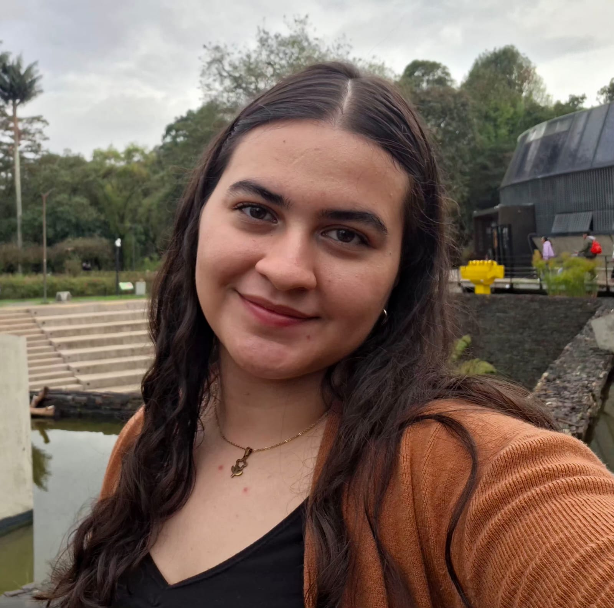
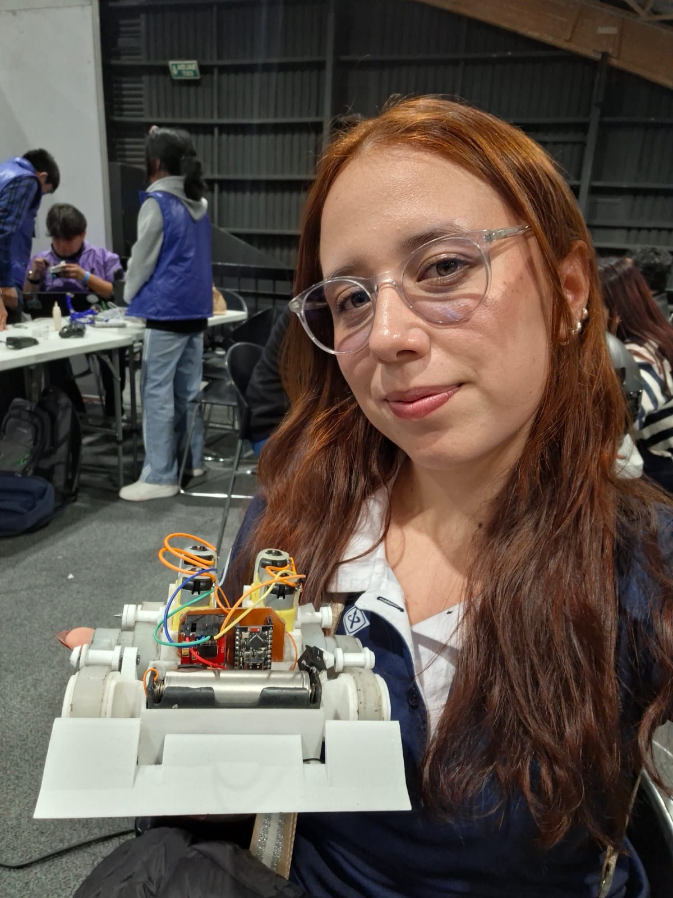
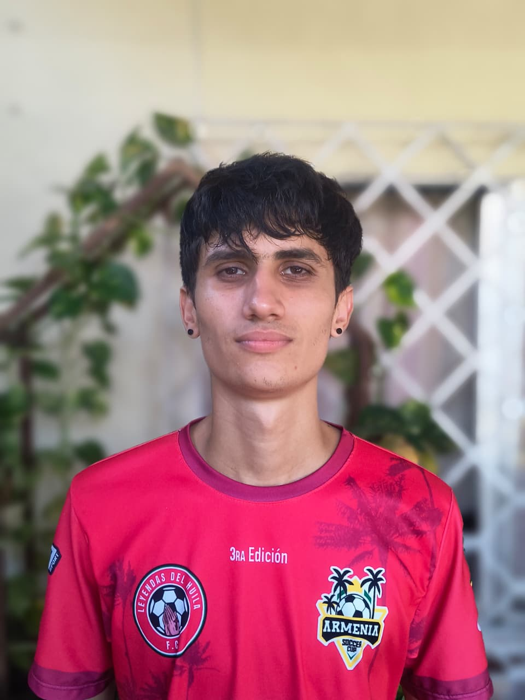

Isabela Muñoz Alvarez
Idea inicial, esquematización, fresadora CNC, soldadura y documentación.
Código: 20232217119
Soy Isabela Muñoz, estudiante de Ingeniería Electrónica en la Universidad Surcolombiana. A lo largo de Electrónica 3 participé de forma transversal en el proyecto: aporté la idea inicial, apoyé en la esquematización, operé la fresadora CNC, realicé soldadura y acompañé los ajustes y la documentación del proceso. Esa experiencia de punta a punta me permitió conectar el diseño con la fabricación real, las pruebas y la transición hacia fabricación y ensamblaje industrial (PCBA).
Trabajo colaborativo en experimentación, diseño de PCB y documentación.
Idea inicial, esquematización, fresadora CNC, soldadura y documentación.
Código: 20232217119
Experimentación, mediciones, diseño en CAD/PCB y registro técnico.
Código: 20232216940
Análisis de circuitos, pruebas en laboratorio, integración y documentación.
Código: 20201185913Haz clic en cada bloque para ver objetivo, proceso, errores resueltos, resultados y archivo.
Exploración inicial y comparador analógico en PSoC 5LP, pruebas con histéresis y póster técnico.
Salida de campo en aulas, Gates y definición del problema real sin uso de PSoC.
Diseño en KiCad, mecanizado en fresadora CNC, soldadura, temporización y conmutación con relé.
Evolución hacia PCBA con 2200uF y 4.7M en KiCad, reglas de diseño y cierre del curso.